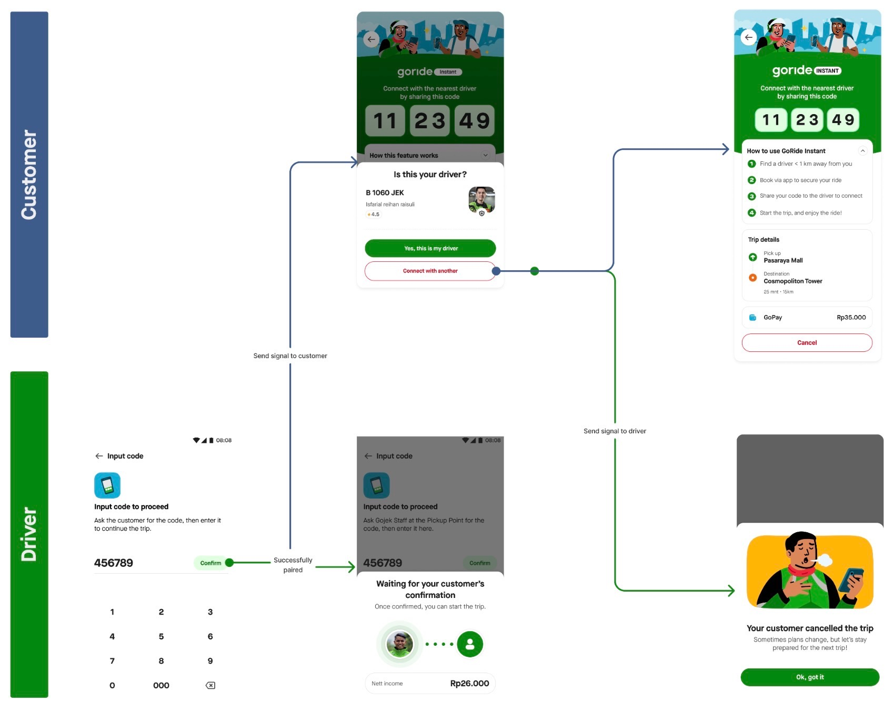
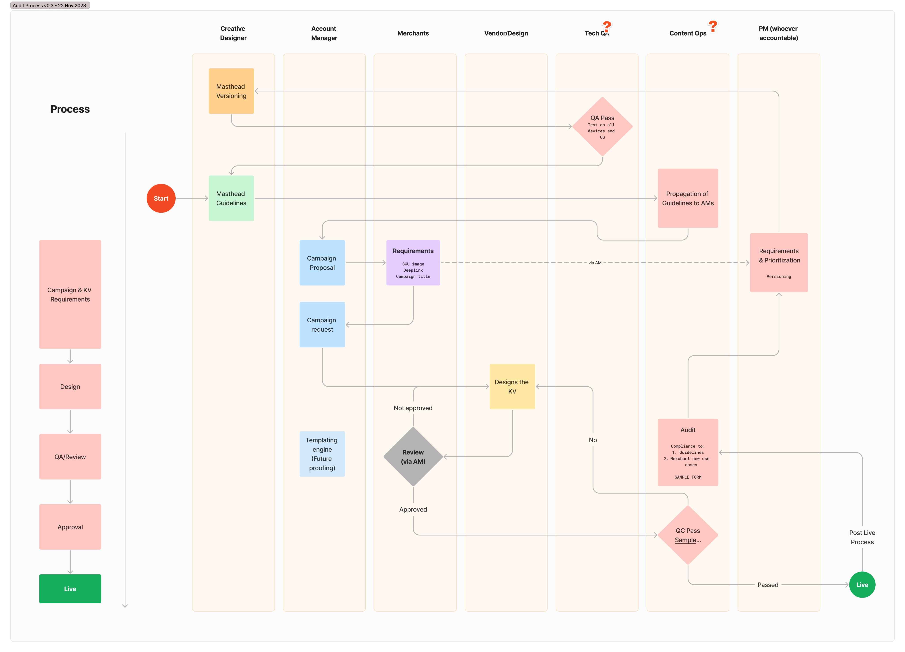

Sukmaji Kumoro
Architectural Industrial Interface Designer
Ten years of product design, building and managing teams across Southeast Asia. I build the collaboration structures that let siloed product groups ship one coherent experience.
Selected work

Airport Experience
Consumer flow and driver flow were owned by different groups, so airport dispatch kept failing in public. A design-led collaboration model put both lanes in one artefact — and moved GTV penetration from 9% to 22.3%.
Read the case
GoRide Instant
Defining what “instant” may and may not do to a street. Treating public disruption as a primary failure metric took the pilot BCR from 1% up by 40 percentage points — and made it GoRide’s 2026 backbone.
Read the case
Ads Principles
Writing down what the platform would refuse to do, then building the governance to enforce it. A contextual-ads redesign shipped in five months and now carries ~10% of GoFood revenue.
Read the caseThe organization’s maturity is my deliverable.Operating thesis
Design Leadership
The longest-running project, and the one the other three were built inside — the principles that decide what gets hired, what gets debated, and what gets refused.
Read the case